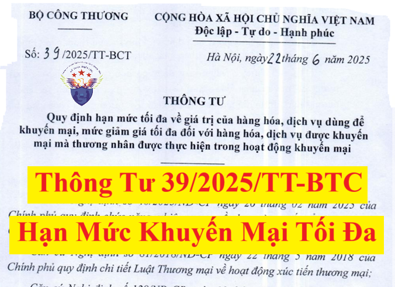

Ngày 22/6/2025, Bộ trưởng Bộ Công Thương ban hành Thông tư 39/2025/TT-BCT quy định hạn mức tối đa về giá trị của hàng hóa, dịch vụ dùng để khuyến mại, mức giảm giá tối đa đối với hàng hóa, dịch vụ được khuyến mại mà thương nhân được thực hiện trong hoạt động khuyến mại.
Hạn mức tối đa về giá trị hàng hóa, dịch vụ dùng để khuyến mại từ ngày 01/7/2025
Theo đó, hạn mức tối đa về giá trị hàng hóa, dịch vụ dùng để khuyến mại từ ngày 01/7/2025 được quy định như sau:
(1) Giá trị vật chất dùng để khuyến mại cho một đơn vị hàng hóa, dịch vụ được khuyến mại không được vượt quá 50% giá bán ngay trước thời gian khuyến mại của đơn vị hàng hóa, dịch vụ được khuyến mại đó, trừ trường hợp khuyến mại bằng các hình thức quy định tại khoản 8 và khoản 9 Điều 92 Luật Thương mại, Điều 8, khoản 2 Điều 9, Điều 12, Điều 13, Điều 14 Nghị định 81/2018/NĐ-CP.

(2) Tổng giá trị của hàng hóa, dịch vụ dùng để khuyến mại trong một chương trình khuyến mại không được vượt quá 50% tổng giá trị của hàng hóa, dịch vụ được khuyến mại, trừ trường hợp khuyến mại bằng hình thức quy định tại khoản 8 và khoản 9 Điều 92 Luật Thương mại, Điều 8 và khoản 2 Điều 9 Nghị định 81/2018.
(3) Giá trị hàng hóa, dịch vụ dùng để khuyến mại thuộc một trong các trường hợp sau đây:
- Trường hợp thương nhân thực hiện khuyến mại không trực tiếp sản xuất, nhập khẩu hàng hóa hoặc không trực tiếp cung ứng dịch vụ dùng để khuyến mại, giá trị được tính bằng giá thanh toán của thương nhân thực hiện khuyến mại để mua hàng hóa, dịch vụ dùng để khuyến mại hoặc giá thị trường của hàng hóa, dịch vụ dùng để khuyến mại tại thời điểm công bố;
- Hàng hóa, dịch vụ dùng để khuyến mại là hàng hóa của thương nhân đó trực tiếp sản xuất, nhập khẩu hoặc cung ứng dịch vụ, giá trị được tính bằng giá thành hoặc giá nhập khẩu của hàng hóa, dịch vụ dùng để khuyến mại.
(4) Trong các trường hợp tổ chức chương trình khuyến mại tập trung thì áp dụng hạn mức tối đa về giá trị của hàng hóa, dịch vụ dùng để khuyến mại là 100%. Hạn mức tối đa về giá trị của hàng hóa, dịch vụ dùng để khuyến mại 100% cũng được áp dụng đối với các hoạt động khuyến mại trong khuôn khổ các chương trình, hoạt động xúc tiến thương mại do cơ quan có thẩm quyền cấp trung ương quyết định.
(5) Chương trình khuyến mại tập trung theo quy định tại (4) gồm:
- Cơ quan nhà nước (cấp trung ương và cấp tỉnh) ban hành quyết định tổ chức thực hiện chương trình khuyến mại tập trung nhằm thực hiện các chính sách phát triển kinh tế có mục tiêu của quốc gia, của địa phương. Nhà nước có chính sách khuyến khích việc tổ chức các chương trình khuyến mại tập trung. Mọi thương nhân đều được quyền tham gia vào các chương trình;
- Các đợt khuyến mại vào các dịp lễ, tết theo quy định của pháp luật lao động, gồm:
+ Đợt Tết Âm lịch: 30 ngày ngay trước ngày đầu tiên của năm Âm lịch;
+ Các ngày nghỉ lễ, tết khác. Thời hạn khuyến mại của từng đợt khuyến mại vào các dịp lễ, tết không được vượt quá thời gian nghỉ của các dịp lễ, tết tương ứng theo quy định của pháp luật lao động.
Chi tiết nội dung của Thông tư 39/2025/TT-BCT như sau:
THÔNG TƯ
Căn cứ Luật Thương mại số 36/2005/QH11 ngày 14 tháng 6 năm 2005;QUY ĐỊNH HẠN MỨC TỐI ĐA VỀ GIÁ TRỊ CỦA HÀNG HÓA, DỊCH VỤ DÙNG ĐỂ KHUYẾN MẠI, MỨC GIẢM GIÁ TỐI ĐA ĐỐI VỚI HÀNG HÓA, DỊCH VỤ ĐƯỢC KHUYẾN MẠI MÀ THƯƠNG NHÂN ĐƯỢC THỰC HIỆN TRONG HOẠT ĐỘNG KHUYẾN MẠI Căn cứ Nghị định số 40/2025 NĐ-CP ngày 26 tháng 02 năm 2025 của Chính phủ quy định chức năng, nhiệm vụ, quyền hạn và cơ cấu tổ chức của Bộ Công Thương: Căn cứ Nghị định số 81/2018/NĐ-CP ngày 22 tháng 5 năm 2018 của Chính phủ quy định chi tiết Luật Thương mại về hoạt động xúc tiến thương mại; Căn cứ Nghị định số 128/NĐ-CP ngày 10 tháng 10 năm 2024 của Chính phủ sửa đổi, bổ sung một số điều của Nghị định số 81/2018/NĐ-CP; Căn cứ Nghị định số 146/2025/NĐ-CP ngày 12 tháng 6 năm 2025 của Chính phủ quy định về phân quyền, phân cấp trong lĩnh vực công nghiệp và thương mại; Theo đề nghị của Cục Xúc tiến thương mại, Bộ trưởng Bộ Công Thương ban hành Thông tư quy định hạn mức tối đa về giá trị của hàng hóa, dịch vụ dùng để khuyến mại, mức giảm giá tối đa đối với hàng hóa. dịch vụ được khuyến mại mà thương nhân được thực hiện trong hoạt động khuyến mại. Điều 1. Phạm vi điều chỉnh Thông tư này quy định cụ thể hạn mức tối đa về giá trị của hàng hóa, dịch vụ dùng để khuyến mại, mức giảm giá tối đa đối với hàng hóa, dịch vụ được khuyến mại mà thương nhân được thực hiện trong hoạt động khuyến mại. Điều 2. Đối tượng áp dụng 1. Thương nhân sản xuất, kinh doanh hàng hóa, dịch vụ trực tiếp thực hiện khuyến mại hoặc thực hiện khuyến mại thông qua các thương nhân phân phối (bán buôn, bán lẻ, đại lý, nhượng quyền thương mại và các thương nhân phân phối khác theo quy định của pháp luật); 2. Thương nhân kinh doanh dịch vụ khuyến mại thực hiện khuyến mại cho hàng hóa, dịch vụ của thương nhân khác theo thỏa thuận với thương nhân đó; 3. Các tổ chức, cá nhân hoạt động có liên quan đến thương mại, các đối tượng có quyền hoạt động xúc tiến thương mại quy định tại Điều 91 Luật thương mại khi thực hiện hoạt động xúc tiến thương mại phải tuân thủ các quy định tại Thông tư này và các quy định pháp luật có liên quan. Điều 3. Hạn mức tối đa về giá trị hàng hóa, dịch vụ dùng để khuyến mại 1. Giá trị vật chất dùng để khuyến mại cho một đơn vị hàng hóa, dịch vụ được khuyến mại không được vượt quá 50% giá bán ngay trước thời gian khuyến mại của đơn vị hàng hóa, dịch vụ được khuyến mại đó, trừ trường hợp khuyến mại bằng các hình thức quy định tại khoản 8 và khoản 9 Điều 92 Luật Thương mại. Điều 8, khoản 2 Điều 9, Điều 12, Điều 13, Điều 14 Nghị định số 81/2018/NĐ-CP ngày 22 tháng 5 năm 2018 của Chính phủ quy định chi tiết Luật Thương mại về hoạt động xúc tiến thương mại. 2. Tổng giá trị của hàng hóa, dịch vụ dùng để khuyến mại trong một chương trình khuyến mại không được vượt quá 50% tổng giá trị của hàng hóa, dịch vụ được khuyến mại, trừ trường hợp khuyến mại bằng hình thức quy định tại khoản 8 và khoản 9 Điều 92 Luật Thương mại, Điều 8 và khoản 2 Điều 9 Nghị định số 81/2018/NĐ-CP. 3. Giá trị hàng hóa, dịch vụ dùng để khuyến mại thuộc một trong các trường hợp sau đây: a) Trường hợp thương nhân thực hiện khuyến mại không trực tiếp sản xuất, nhập khẩu hàng hóa hoặc không trực tiếp cung ứng dịch vụ dùng để khuyến mại, giá trị được tính bằng giá thanh toán của thương nhân thực hiện khuyến mại để mua hàng hóa, dịch vụ dùng để khuyến mại hoặc giá thị trường của hàng hóa, dịch vụ dùng để khuyến mại tại thời điểm công bố; b) Hàng hóa, dịch vụ dùng để khuyến mại là hàng hóa của thương nhân đó trực tiếp sản xuất, nhập khẩu hoặc cung ứng dịch vụ, giá trị dược tính bằng giá thành hoặc giá nhập khẩu của hàng hóa, dịch vụ dùng để khuyến mại. 4. Trong các trường hợp tổ chức chương trình khuyến mại tập trung thì áp dụng hạn mức tối đa về giá trị của hàng hóa, dịch vụ dùng để khuyến mại là 100%. Hạn mức tối đa về giá trị của hàng hóa, dịch vụ dùng để khuyến mại 100% cũng được áp dụng đối với các hoạt động khuyến mại trong khuôn khổ các chương trình, hoạt động xúc tiến thương mại do cơ quan có thẩm quyền cấp trung ương quyết định. 5. Chương trình khuyến mại tập trung theo quy định tại Khoản 4 Điều này gồm: a) Cơ quan nhà nước (cấp trung ương và cấp tỉnh) ban hành quyết định tổ chức thực hiện chương trình khuyến mại tập trung nhằm thực hiện các chính sách phát triển kinh tế có mục tiêu của quốc gia, của địa phương. Nhà nước có chính sách khuyến khích việc tổ chức các chương trình khuyến mại tập trung. Mọi thương nhân đều được quyền tham gia vào các chương trình; b) Các đợt khuyến mại vào các dịp lễ, tết theo quy định của pháp luật lao động, gồm: - Đợt Tết Âm lịch: 30 ngày ngay trước ngày đầu tiên của năm Âm lịch; - Các ngày nghỉ lễ, tết khác. Thời hạn khuyến mại của từng đợt khuyến mại vào các dịp lễ, tết không được vượt quá thời gian nghỉ của các dịp lễ, tết tương ứng theo quy định của pháp luật lao động. Điều 4. Mức giảm giá tối đa đối với hàng hóa, dịch vụ được khuyến mại 1. Mức giảm giá tối đa đối với hàng hóa, dịch vụ được khuyến mại không được vượt quá 50% giá hàng hóa, dịch vụ đó ngay trước thời gian khuyến mại. 2. Trong các trường hợp tổ chức chương trình khuyến mại tập trung theo quy định tại khoản 5 Điều 3 thì áp dụng mức giảm giá tối đa đối với hàng hóa, dịch vụ được khuyến mại là 100%. Mức giảm giá tối đa 100% cũng áp dụng đối với các hoạt động khuyến mại trong khuôn khổ các chương trình, hoạt động xúc tiến thương mại do cơ quan có thẩm quyền cấp trung ương quyết định. 3. Không áp dụng hạn mức giảm giá tối đa khi thực hiện khuyến mại giảm giá cho: a) Hàng hóa dịch vụ khi thực hiện chính sách bình ổn giá của Nhà nước; b) Hàng thực phẩm tươi sống; c) Hàng hóa, dịch vụ trong trường hợp doanh nghiệp phá sản, giải thể, thay đổi địa điểm, ngành nghề sản xuất, kinh doanh. Điều 5. Điều khoản thi hành 1. Thông tư này có hiệu lực từ ngày 01 tháng 7 năm 2025. 2. Các hoạt động khuyến mại, chương trình khuyến mại tập trung đang áp dụng hạn mức tối đa về giá trị của hàng hóa, dịch vụ dùng để khuyến mại, mức giảm giá tối đa đối với hàng hóa, dịch vụ được khuyến mại theo quy định tại Điều 6, Điều 7 Nghị định số 81/2018/NĐ-CP, khoản 1, khoản 2 Điều 1 Nghị định số 128/2024/NĐ-CP trước ngày Thông tư này có hiệu lực thì tiếp tục được áp dụng cho đến khi hết thời hạn thực hiện hoạt động khuyến mại, chương trình khuyến mại tập trung đó./.
|